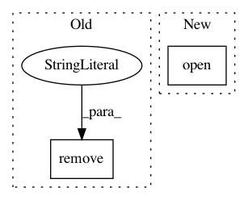

ef24b500a80a7536beedcc63529a1999101a4ac4,mltsp/tests/test_featurize.py,,test_write_features_to_disk,#,188
Before Change
feat_class_cont = f.read()
classes_list = joblib.load("test_featset_classes.pkl")
os.remove("test_featset_features.csv")
os.remove("test_featset_features_with_classes.csv")
os.remove("test_featset_classes.pkl")
os.remove(os.path.join(
os.path.join(cfg.MLTSP_PACKAGE_PATH, "Flask/static/data"),
"test_featset_features_with_classes.csv"))
After Change
with open(os.path.join(cfg.FEATURES_FOLDER,
"test_featset01_features.csv")) as f:
feat_cont = f.read()
with open(os.path.join(cfg.FEATURES_FOLDER,
"test_featset01_features_with_classes.csv")) as f:
feat_class_cont = f.read()
classes_list = joblib.load(os.path.join(cfg.FEATURES_FOLDER,
"test_featset_classes.pkl"))
In pattern: SUPERPATTERN
Frequency: 3
Non-data size: 2
Instances
Project Name: cesium-ml/cesium
Commit Name: ef24b500a80a7536beedcc63529a1999101a4ac4
Time: 2015-02-27
Author: a.crellinquick@gmail.com
File Name: mltsp/tests/test_featurize.py
Class Name:
Method Name: test_write_features_to_disk
Project Name: scikit-video/scikit-video
Commit Name: a9ffb238938e781cbeb21972acc78aadce3e0bcb
Time: 2016-01-24
Author: tgoodall@utexas.edu
File Name: skvideo/tests/test_vread.py
Class Name:
Method Name: _rawhelper1
Project Name: vatlab/SoS
Commit Name: 8b120031158f583e6bfbf5cb0d7ddd8492e52155
Time: 2017-06-27
Author: ben.bog@gmail.com
File Name: test/PBS/test_pbs_queue.py
Class Name: TestPBSQueue
Method Name: testCaseInsensitiveLocalPath